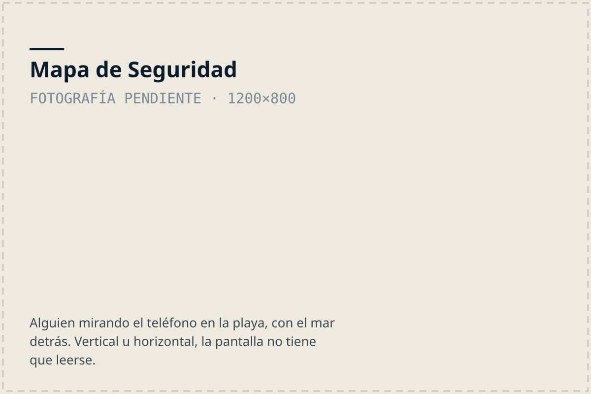

Playa por playa
Mapa de Seguridad
Dónde se puede nadar en esta costa. Está hecho para el teléfono, para consultarlo parado en la playa, antes de entrar al agua.
Abrir el mapa en el teléfono
Dónde se puede nadar en esta costa, playa por playa. Ábrelo en el teléfono antes de entrar al mar.
Abrir el mapa →Última revisión: Sin revisar aún. Pregunta a un guardavidas antes de entrar al mar.
Qué muestra
- No nadar
- Corrientes de resaca frecuentes o fondo peligroso. En el mapa es la línea más gruesa y continua: la marca más fuerte es siempre la más peligrosa.
- Precaución
- Seguro sólo en ciertas condiciones: marea, oleaje u hora del día. Línea entrecortada.
- Se puede nadar
- La zona más protegida del tramo. Línea punteada fina. No es una promesa: el mar cambia.

Corrientes y estaciones registradas
Este es el contenido del mapa anotado, escrito en texto para que se pueda leer, buscar y escuchar con un lector de pantalla.
Contenido del mapa en texto (9 corrientes, 4 estaciones)
Coordenadas aproximadas, con un margen de unos 75 m. Provienen del mapa anotado por Caribbean Guard y están pendientes de confirmación.
- Corriente de resaca 1: 9.6441, -82.7240 (aprox. 41 m, hacia mar abierto)
- Corriente de resaca 2: 9.6437, -82.7240 (aprox. 32 m, hacia mar abierto)
- Corriente de resaca 3: 9.6453, -82.7180 (aprox. 38 m, hacia mar abierto)
- Corriente de resaca 4: 9.6426, -82.7156 (aprox. 60 m, hacia mar abierto)
- Corriente de resaca 5: 9.6418, -82.7114 (aprox. 31 m, hacia mar abierto)
- Corriente de resaca 6: 9.6420, -82.7112 (aprox. 66 m, hacia mar abierto)
- Corriente de resaca 7: 9.6416, -82.7104 (aprox. 29 m, hacia mar abierto)
- Corriente de resaca 8: 9.6417, -82.7101 (aprox. 38 m, hacia mar abierto)
- Corriente de resaca 9: 9.6404, -82.7080 (aprox. 94 m, hacia mar abierto)
- Estación de salvamento 1: 9.6447, -82.7190
- Estación de salvamento 2: 9.6433, -82.7181
- Estación de salvamento 3: 9.6414, -82.7107
- Estación de salvamento 4: 9.6403, -82.7088
Códigos QR en la costa
Estamos colocando códigos QR en postes a lo largo de la playa. Cada uno abre el mapa directamente en la playa donde estás parado, sin tener que buscarla.